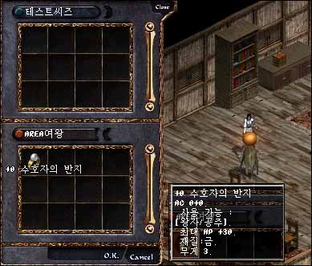

2003年1月25日 王族45級任務流程來源：Lineage Playforum
英文翻譯：Lineage Compendium 1. 到威頓村找NPC Masha，她會要求皇家封印(Royal Seal)，但皇家封印是分成兩面的，其中一面要找肯得城堡的NPC Lyon，而另一面則要找水晶洞穴一層的NPC Brad以獲得更多資料。
2. 在找到Lyon後，他會告訴你其中一面的皇家封印是在妖洞三層的膽小妖魔(Cowardly Orc)身上，在殺死牠並得到其中一面的皇家封印後，Lyon會叫你去詢問風木村的NPC Mack的意見。
3. Mack會告訴你去找水晶洞穴一層的NPC Brad。
4. Brad會告訴你去殺死水晶洞穴二層的冰之女僕(Ice Maiden)，她會掉下三色的精靈碎片(Spirit Pieces)，你要將白色的精靈碎片給予自己血盟內的45級或以上妖精，黑色的給45級+的法師及將紅色的給45級+的騎士。
5. 他們三人需要使用那三塊精靈碎片，在使用後他們會死亡並會掉下經驗值，而那三塊精靈碎片亦會變成三張精靈之證。
6. 王族拿著那三張精靈之證便可以和Mack交換另一面的皇家封印。
7. 將兩面的皇家封印交給Masha後，她會給你保護者的戒指（體力上限+30，王族專用）及擁有聯盟的權利。
 下圖就是聯盟系統的介面，黃色的是在線的成員，灰色的是不在線的成員，而括弧內則是他們的階級（聯盟王族，高階成員，普通成員）
殺死妖洞三層的膽小妖魔->得到皇家封印
殺死冰洞二層的冰之女僕->得到三塊精靈碎片->各職業的Lv45+使用精靈碎片->死亡並得到三張精靈之證->交換皇家封印
兩面的皇家封印->交換保護者戒指及創立聯盟的權力 而昨天更新的圖示及對應名稱如下： | 皇家封印 | | 皇家封印 |  | 精靈碎片（紅色） |  | 精靈之證（紅色） |  | 精靈碎片（白色） | | 精靈之證（白色） |  | 精靈碎片（黑色） |  | 精靈之證（黑色） |
韓國測試伺服器1月24日更新內容 原文：韓國天堂官方網站公告
英文翻譯：Lineage Compendium 1. 王族在45級後，要通過王族45級試練後才開始建立聯盟，開始地點為威頓村的NPC Masha。
2. 45級或以上的王族可以擁有魅力x6成員數量的聯盟，而50級或以上的則可以有魅力x10。
3. 加入了新的/pledge介面去控制聯盟系統。
4. 在聯盟內各成員有四種階級，分別是聯盟王族，高階成員，普通成員及新成員。
5. 聯盟王族可以接納其他王族成為血盟的一份子。
6. 聯盟王族及高階成員可以鍵入"%"使用聯盟頻道。 |